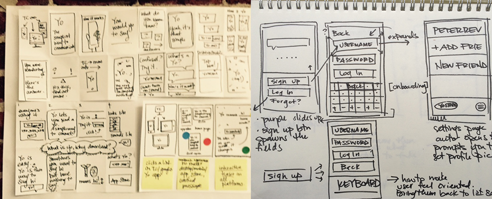
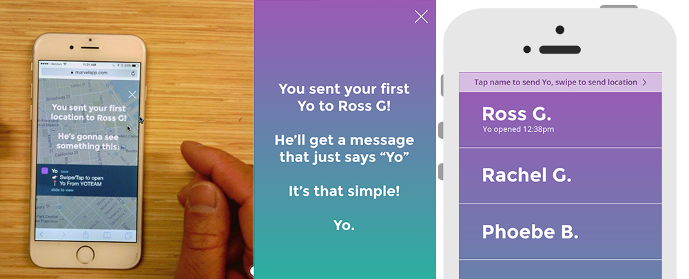
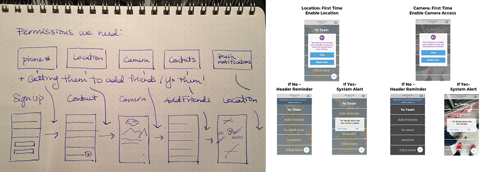
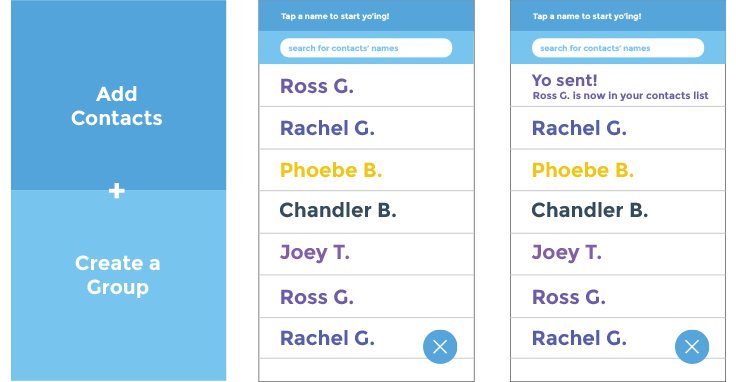
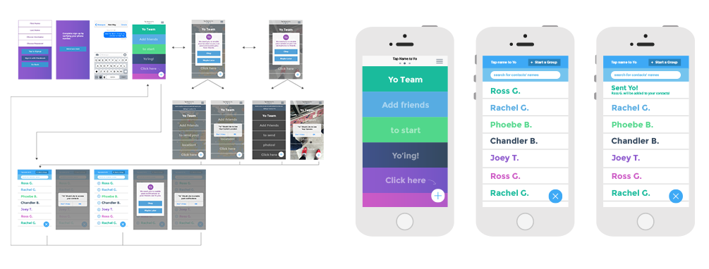

As the Product Designer at Yo I had the chance to redesign the on-boarding experience in way that educates new users and collects permissions without creating too much friction.
As we looked at the analytics for Yo, we found that
people who were still using it after a week were pretty likely to be steady users.
But the ones we were concerned about were those that downloaded it and dropped off.
So we knew that we wanted to focus on new user retention and address this
through a redesign of the onboarding process.
We wanted to address four goals with onboarding:
1. Telling new users about possible use cases for Yo.
2. Reassuring them they were doing it right.
3. Don't let permissions become an obstacle to using the app.
4. Get people adding friends!


Overall our goal with satisfying each of these requirements was to have
as little onboarding as possible. We knew that it was crucial to get people
playing around with the app quickly, while giving them just the right
amount of information to know how to use the app and be able to access
all its features.
One thing I heard from users a lot was "I don't know if I'm doing this right."
So it was important to the team to let them know more about this abstract
concept called "Yo". I had several ideas about how to accomplish this -
from introducing a character to an immediate Yo button, to showing people
what their friend saw. But we settled on an elegant solution that added
a receipt stamp to the contact field so users could understand their
message was successfully sent and opened.

From there it was really about baking in the needed permissions into the
experience of the app and making sure people were adding friends.
We made an engineering decision to allow users to Yo any of their contacts,
whether they were on the app or not. We called this "Seamless Yo-ing." So I
wanted the 'Add Friends' feature to seem like just a layer on top of
your contacts.

All in all, I wanted to create a seamless experience that interrupted users
as little as possible, while still showing them how to use the app and allowing
us to get the permissions we needed.
